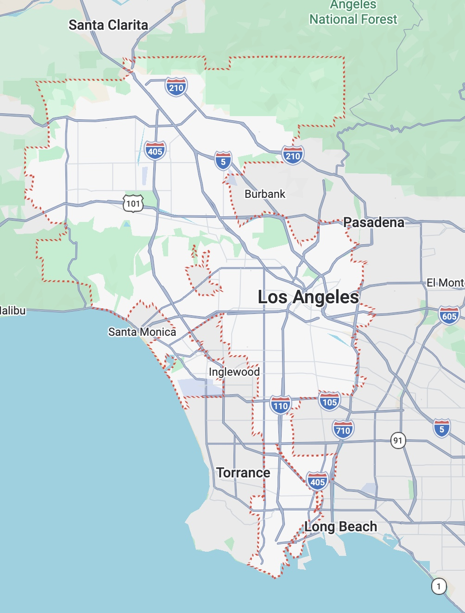
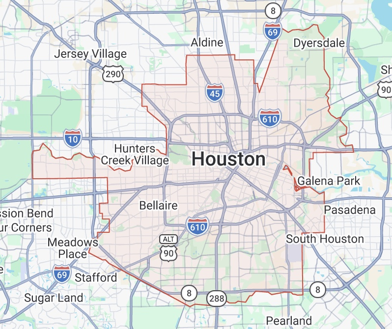
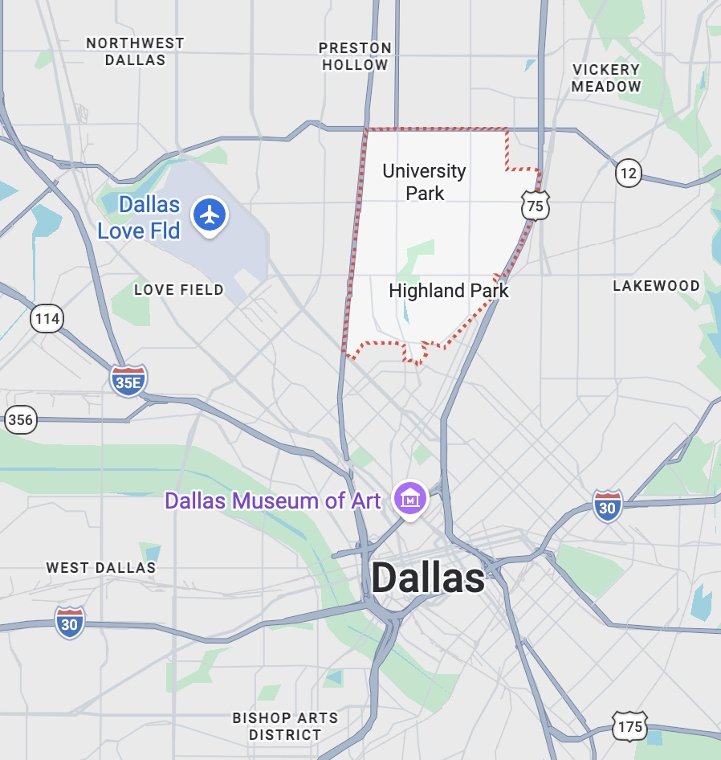

Three districts, two states, one argument.
What do LAUSD, HISD, and Highland Park show us about how state systems operate on the ground?
Abstractions about “state structure” become concrete when we look at individual districts. LAUSD shows California’s state-buffered model in action: a high-need urban district with relatively high per-student revenue because the state plays a major role in funding. HISD shows the limits of Texas’s local-tax-heavy model in a high-need urban district. Highland Park ISD shows what the same Texas rules look like when the local tax base is wealthy.

| State share of revenue | 54% |
| Local share of revenue | 26% |
| Per-student revenue | $28,702 |
| Student demographics | 73% Latino · 83% low-income · 18% English learners |
| Median home value (context) | $753,600 |
LAUSD illustrates California’s state-buffered funding model. Even though LAUSD serves a large, urban, high-need student population, it receives a majority of its revenue from the state rather than depending mainly on local property taxes. This matters because California’s funding structure partially separates school resources from local property wealth, giving LAUSD a much higher per-student revenue capacity than HISD despite both districts serving large urban populations.
At the same time, LAUSD is not a low-need district. Its student population is majority Latino, overwhelmingly low-income, and includes a substantial English learner population. This means LAUSD’s relatively high per-student revenue should not be read simply as “extra money,” but as funding capacity needed to serve a large and complex urban student body.

| State share of revenue | 8% |
| Local share of revenue | 69% |
| Per-student revenue | $15,124 |
| Student demographics | 60.5% Hispanic · 77.1% economically disadvantaged · 36.8% English learners |
| Median home value (context) | $246,400 |
HISD illustrates a different model. Like LAUSD, it is a major urban district with high student need, but unlike LAUSD, it receives only a small share of its revenue from the state and depends heavily on local revenue. Because local funding in Texas is closely tied to property-tax capacity, HISD’s lower housing values and higher poverty context help explain why its per-student revenue is much lower than LAUSD’s.
This makes HISD especially important for the project’s argument. It shows that student need and funding capacity do not automatically move together. HISD serves a student population with substantial economic and language-support needs, yet its local-tax-heavy funding structure produces much less per-student revenue than LAUSD’s more state-supported model.

| State share of revenue | 6% |
| Local share of revenue | 91% |
| Per-student revenue | $16,387 |
| Student demographics | 80.8% white · 0.7% economically disadvantaged · 1.5% English learners |
| Median home value (context) | $1,731,100 |
Highland Park ISD is not used here as a representative Texas district. Instead, it is a within-Texas contrast that shows what happens when the same Texas funding rules operate in a much wealthier community. Compared with HISD, Highland Park has far higher local property wealth, much lower poverty, and a student population with far fewer economically disadvantaged and English learner students.
The funding pattern reflects that difference. Highland Park receives 91% of its revenue from local sources and only 6% from the state, while still reporting higher per-student revenue than HISD. It also operates as a recapture district, meaning it collects a large amount of local property-tax revenue and sends part of it back to the state for redistribution. This makes Highland Park a useful example of how local wealth remains powerful inside the Texas system, even with recapture.
What these three districts show together
Taken together, these three districts help isolate the mechanism behind the broader Texas–California comparison. The LAUSD–HISD contrast shows how two large urban districts with substantial student need can end up with very different resource levels because they sit inside different state finance systems. LAUSD is embedded in a California system where the state plays a much larger role in school revenue. HISD is embedded in a Texas system where local property-tax revenue plays a much larger role.
The HISD–Highland Park contrast then shows that the issue is not only California versus Texas. It is also about what happens within Texas when the same state rules meet very different local economic conditions. HISD’s lower home values and higher poverty weaken its local revenue capacity, while Highland Park’s high property wealth allows it to generate stronger local resources. In that sense, Highland Park helps prove the argument more clearly: Texas’s funding structure does not affect all districts equally because local tax bases are unequal.
Together, the three cases show that school funding differences are shaped by the interaction between state policy design and local economic context. California’s model does more to buffer local inequality through state funding, while Texas’s model leaves more room for local property wealth to shape district resources. The result is that students’ educational resource capacity is not determined only by their needs, but also by the wealth and funding rules of the communities in which they attend school.
The next chapter steps back from these specific districts to ask what the broader literature says about finance, governance, and educational opportunity.